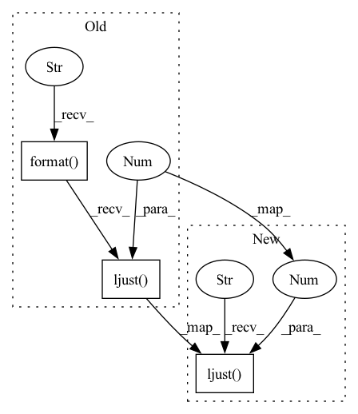

Pattern ID :21274

Before Change
output_iter(_epoch + 1, self.preprocess_epoch), **ansi).ljust(64)
_str = " ".join([
"Loss: {:.4f},".format(losses.avg).ljust(20),
"Time: {},".format(epoch_time).ljust(20),
])
prints(pre_str, _str, prefix="{upline}{clear_line}".format(**ansi), indent=4)
atanh_mark.requires_grad = False
After Change
pre_str = "{blue_light}Epoch: {0}{reset}".format(
output_iter(_epoch + 1, self.preprocess_epoch), **ansi).ljust(64)
_str = " ".join([
f"Loss: {losses.avg:.4f},".ljust(20),
f"Time: {epoch_time:d},".ljust(20),
])
prints(pre_str, _str, prefix="{upline}{clear_line}".format(**ansi), indent=4)
In pattern: SUPERPATTERN
Frequency: 3
Non-data size: 3
Instances
Fragment ID: 68090595
Project Name: ain-soph/trojanzoo
Commit Name: 829490eb9a8bdbd8370611924d6fbfd2d4533f65
Time: 2020-07-31
Author: ain-soph@live.com
File Name: trojanzoo/attack/backdoor/latent_backdoor.py
M Class Name: Latent_Backdoor
N Class Name: Latent_Backdoor
M Method Name: preprocess_mark(2)
N Method Name: preprocess_mark(2)
M Parent Class: BadNet
N Parent Class: BadNet
M File Name: trojanzoo/attack/backdoor/latent_backdoor.py
N File Name: trojanzoo/attack/backdoor/latent_backdoor.py
M Start Line: 99
M End Line: 116
N Start Line: 115
N End Line: 116
'>
Before Change
"Acc: {:.2f}, ".format(acc.avg).ljust(20),
"Norm: {:.4f},".format(norm.avg).ljust(20),
"Entropy: {:.4f},".format(entropy.avg).ljust(20),
"Time: {},".format(epoch_time).ljust(20),
])
prints(pre_str, _str, prefix="{upline}{clear_line}".format(**ansi), indent=4)
mark = generator(noise, poison_label) * mask
After Change
pre_str = "{blue_light}Epoch: {0}{reset}".format(
output_iter(_epoch + 1, self.remask_epoch), **ansi).ljust(64)
_str = " ".join([
f"Loss: {losses.avg:.4f},".ljust(20),
f"Acc: {acc.avg:.2f}, ".ljust(20),
f"Norm: {norm.avg:.4f},".ljust(20),
f"Entropy: {entropy.avg:.4f},".ljust(20),
'>
Fragment ID: 68090592
Project Name: ain-soph/trojanzoo
Commit Name: 829490eb9a8bdbd8370611924d6fbfd2d4533f65
Time: 2020-07-31
Author: ain-soph@live.com
File Name: trojanzoo/defense/backdoor/deep_inspect.py
M Class Name: Deep_Inspect
N Class Name: Deep_Inspect
M Method Name: remask(2)
N Method Name: remask(2)
M Parent Class: Defense_Backdoor
N Parent Class: Defense_Backdoor
M File Name: trojanzoo/defense/backdoor/deep_inspect.py
N File Name: trojanzoo/defense/backdoor/deep_inspect.py
M Start Line: 77
M End Line: 118
N Start Line: 114
N End Line: 118
'>
Before Change
"Acc: {:.2f}, ".format(acc.avg).ljust(20),
"Norm: {:.4f},".format(norm.avg).ljust(20),
"Entropy: {:.4f},".format(entropy.avg).ljust(20),
"Time: {},".format(epoch_time).ljust(20),
])
prints(pre_str, _str, prefix="{upline}{clear_line}".format(**ansi), indent=4)
After Change
pre_str = "{blue_light}Epoch: {0}{reset}".format(
output_iter(_epoch + 1, nc_epoch), **ansi).ljust(64)
_str = " ".join([
f"Loss: {losses.avg:.4f},".ljust(20),
f"Acc: {acc.avg:.2f}, ".ljust(20),
f"Norm: {norm.avg:.4f},".ljust(20),
f"Entropy: {entropy.avg:.4f},".ljust(20),
'>
Fragment ID: 68090593
Project Name: ain-soph/trojanzoo
Commit Name: 829490eb9a8bdbd8370611924d6fbfd2d4533f65
Time: 2020-07-31
Author: ain-soph@live.com
File Name: trojanzoo/defense/backdoor/neural_cleanse.py
M Class Name: Neural_Cleanse
N Class Name: Neural_Cleanse
M Method Name: remask(2)
N Method Name: remask(2)
M Parent Class: Defense_Backdoor
N Parent Class: Defense_Backdoor
M File Name: trojanzoo/defense/backdoor/neural_cleanse.py
N File Name: trojanzoo/defense/backdoor/neural_cleanse.py
M Start Line: 100
M End Line: 143
N Start Line: 139
N End Line: 143